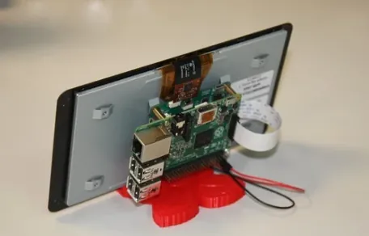

Détection des maladies des plantes par Deep Learning
Un modèle de classification d’images de feuilles déployé sur Raspberry Pi pour un diagnostic sur le terrain.
Contexte et objectif
Concevoir un système de détection et de reconnaissance des maladies des plantes à partir d’images de feuilles, pour aider les agriculteurs à poser un diagnostic rapide et à prévenir la propagation.
Projet de fin d’études de Licence, réalisé au Laboratoire d’Électronique et de Microélectronique de la Faculté des Sciences de Monastir (février – mai 2023).
Architecture de la solution
- DatasetImages de feuilles saines et malades (Kaggle)
- PrétraitementRedimensionnement, normalisation, filtrage
- Modèle CNNTensorFlow/Keras sur Google Colab
- EmbarquéRaspberry Pi et caméra USB
- DiagnosticRésultat affiché sur écran LCD

Méthodologie
- Collecte et préparation d’un dataset d’images de feuilles (malades et saines).
- Prétraitement des images : redimensionnement, normalisation, filtrage, augmentation de données.
- Entraînement d’un CNN avec TensorFlow/Keras.
- Évaluation : matrice de confusion, accuracy, validation croisée.
- Déploiement sur Raspberry Pi avec caméra et affichage du diagnostic.
Stack technique
| Modèle | Python, TensorFlow, Keras, OpenCV |
|---|---|
| Entraînement | Google Colab |
| Matériel | Raspberry Pi, caméra USB, écran LCD |
Résultats
- Précision satisfaisante sur plusieurs classes de maladies.
- Inférence possible sur un matériel à faible consommation.
- Utilisation envisageable en serre ou en exploitation agricole.